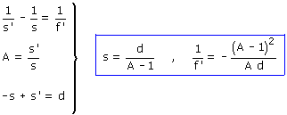
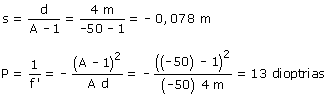

La imagen es real puesto que se recoge en un a pantalla, luego y' = -100 cm Datos: A = (-100)/2 = -50 Incógnitas: s, s', f' La distancia diapositiva-lente es: -s y la distancia lente-pantalla
vale s', entonces sabemos que: Ecuaciones de la lente:   La diapositiva está 0.078 m a la izquierda de la lente, luego la lente está a 0.078 m de la diapositiva y a 3.92 m de la pantalla. |